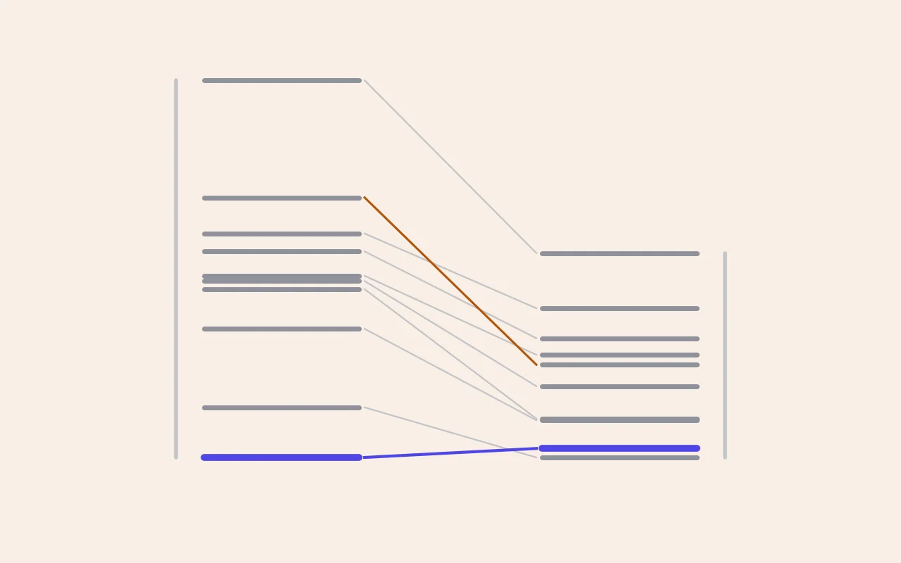

DFT 실습 [11] — 계산기를 믿기 전에 시험부터: CHGNet과 G1 검증
실습 [10]에서 Ni 하나로 원소가 섞이는 문을 열었습니다. 그런데 원소를 네 가지로 늘리고 셀을 키우면 배열의 경우의 수가 순식간에 천문학적으로 불어납니다. 전부 DFT로 계산할 수는 없으니, DFT보다 수만 배 빠른 계산기를 하나 들여야 해요. 이 글은 그 계산기를 연구에 쓰기 전에 얼마나 믿을 수 있는지 시험한 기록입니다.

한 줄 요약
범용 기계학습 퍼텐셜 CHGNet은 같은 조성 안에서 배열의 에너지 순위를 잘 맞힌다(Na₆Mn₃FeNiTiO₁₂ 배열 10개, 스피어만 0.92, DFT 최저 배열을 2위로). 하지만 에너지 차이를 약 절반으로 압축해서 보고, 조성을 가로지르는 에너지(볼록 껍질)와 비국재 전하는 틀린다. 그래서 CHGNet은 "같은 조성 안의 후보 거르기"에만 쓰고, 전압·볼록 껍질·전하 상태는 DFT로 판정한다.
0. 왜 계산기를 하나 더 들이나
네 원소(Mn, Fe, Ni, Ti)를 Mn 절반에 나머지 셋을 같은 비율로 섞는다고 해봅시다. 전이금속 자리에 원소를 배치하는 경우의 수는 셀이 커질수록 이렇게 늘어납니다.
DFT로 감당할 수 있는 건 수백 개입니다. 게다가 실습 [9]에서 24원자 이하의 작은 셀은 이웃이 자기 자신의 주기 복사본이 되어 무질서와 탄성 효과를 제대로 담지 못한다는 걸 봤으니, 논문의 결론은 48원자 이상에서 내야 합니다. 그래서 필요한 게 기계학습 원자간 퍼텐셜(MLIP)이에요. DFT가 계산한 수많은 구조의 에너지와 힘을 신경망이 학습해서, 새 구조의 에너지를 DFT보다 수만 배 빠르게 예측합니다. 수천 개의 후보를 MLIP으로 거르고, 유망한 수십 개만 DFT로 확정하는 게 본 연구의 설계입니다.
문제는 MLIP이 틀릴 수 있다는 것. 그래서 연구 가이드에 첫 관문(G1)을 두었습니다. "MLIP이 DFT의 에너지 순위를 맞히는가"를 확인하기 전에는 MLIP의 판단에 계산 예산을 걸지 않는다는 규칙이에요.
1. 먼저 집 정리: 폴더와 결과 장부
계산이 60건을 넘어가면서 폴더가 시간 순서로 흩어져 있었습니다. 같은 x = 0.5 계산이 폴더 네 곳에 나뉘어 있고, 1차와 2차 이완이 따로 놓여 어느 쪽이 최종인지 이름만으로는 알 수 없었죠. 수천 개를 다루기 전에 규칙부터 세웠습니다.
calc/<물질>/<Na 함량>/<셀>_<배열>_<스핀>/r<이완 차수>
예) calc/NaMnO2/x0.50/sc14_c2_uddu/r1 (14원자 슈퍼셀, Na 배열 c2, 스핀 위아래아래위)
calc/Na6Mn3FeNiTiO12/x1.00/sc24_g05_fm/r2그리고 모든 계산 폴더를 훑어 한 줄씩 모으는 결과 장부(ledger.csv)를 만들었습니다. 경로, 조성, 최종 에너지, 자기모멘트, 최대 힘, 부피, 수렴 여부, 그리고 첫 스텝과 최종 에너지의 차이를 적고, 배열마다 최종값(수렴한 가장 큰 이완 차수)에 표시를 붙여요. 이 장부가 에너지의 원본이 되어서, 이후 모든 비교 스크립트는 숫자를 손으로 옮기지 않고 장부에서 읽습니다.
장부를 처음 돌려보니 곧바로 쓸모가 있었습니다. 계산 47건 중 경고가 붙은 건 실습 [10]에서 이미 알던 두 건(스핀이 뒤집히며 멈춘 계산)뿐이었고, 나머지 모든 2차 이완의 첫 스텝 차이가 0~1 meV여서 준안정 상태 문제가 다른 곳에는 없었다는 게 한 번에 확인됐어요. 폴더를 하나씩 열어봤다면 반나절은 걸렸을 점검입니다.
2. CHGNet이란
CHGNet은 Materials Project의 GGA와 GGA+U 계산 궤적(약 150만 구조)으로 학습한 범용 MLIP입니다. 에너지와 힘뿐 아니라 자기모멘트까지 학습해서, 모멘트를 전하 상태의 대리 지표로 쓰는 게 특징이에요. 우리 세팅(옛 PBE POTCAR, MP의 U 값)과 같은 계열의 데이터로 학습했다는 점이 이 모델을 고른 이유입니다.
미리 알아둘 한계가 하나 있습니다. CHGNet은 스핀 방향을 입력으로 받지 않아서 자기 배열끼리는 구분하지 못합니다. 모멘트의 크기는 예측하지만 위아래는 모르죠. 그래서 비교는 전부 FM 계산끼리 했고, 자기 배열 샘플링은 원래 설계대로 DFT가 맡습니다.
3. 첫 검증: 이미 가진 답으로 채점하기
우선 지금까지의 DFT 결과 여섯 개(α-NaMnO₂, x = 0.5의 두 배열, x = 0.75, Na 금속, Ni 치환체)를 CHGNet에 넣어봤습니다. 먼저 눈에 띈 건 원자당 에너지가 0.7~0.9 eV씩 낮다는 점이었어요. 오류처럼 보이지만 정체는 MP의 에너지 보정값입니다.
| 구조 | CHGNet − DFT (eV/원자) | MP 보정으로 예상한 값 | 비고 |
|---|---|---|---|
| NaMnO₂ | −0.740 | −0.76 | Mn 하나, O 둘 |
| Na₀.₅MnO₂ | −0.862 | −0.87 | 원자 수가 줄어 원자당 보정이 커짐 |
| Na₀.₇₅MnO₂ | −0.805 | −0.81 | |
| NaMn₀.₇₅Ni₀.₂₅O₂ | −0.817 | −0.815 | Ni 보정이 더해짐 |
| Na 금속 | +0.013 | 0 | 보정 없음 |
다행히 이 보정은 전압과 볼록 껍질에서 상쇄됩니다. 반응 양쪽에 같은 수의 Mn과 O가 있으니까요. 보정을 걷어내고 본 성적표는 이렇습니다.
| 항목 | DFT | CHGNet | 판정 |
|---|---|---|---|
| x = 0.5 두 배열의 차이 (c2 − c1) | −23.6 meV/셀 | −29.9 meV/셀 | ✓ 순위와 크기 모두 비슷 |
| 전압 x = 0.75 → 0.5 | 2.377 V | 2.402 V | ✓ |
| α-NaMnO₂ 얀-텔러 결합 | 1.970 / 2.436 Å | 1.97 / 2.436 Å | ✓ |
| x = 0.5의 Mn³⁺와 Mn⁴⁺ 모멘트 | 3.8 / 3.1~3.2 μB | 3.87 / 3.30 μB | ✓ 3+와 4+ 구분 |
| 전압 x = 1 → 0.75 | 2.391 V | 2.156 V | ✗ 0.24 V 틀림 |
| x = 0.75 볼록 껍질 | +7 meV/셀 | −123 meV/셀 | ✗ x = 0.75를 크게 안정하다고 봄 |
| Ni 치환의 Mn³·⁵⁺ 두 자리 | 3.64 μB, 비 1.07 | 3.87 μB, 비 1.13 | ✗ 구멍이 퍼진 상태를 재현 못 함 |
두 실패에는 공통점이 있습니다. x = 0.75는 Mn⁴⁺ 하나가 Mn³⁺ 셋 사이에 정렬된 상태이고, Ni 치환체는 구멍이 두 자리에 퍼진 상태예요. 둘 다 전하가 특이하게 배치된 경우입니다. 학습 데이터에 이런 경우가 드물어서 전하 배치가 에너지와 구조를 좌우하는 곳에서 흔들린다고 해석할 수 있어요. 같은 조성 안에서 배열끼리 비교할 때는 이런 오차가 양쪽에 비슷하게 들어가 상쇄되지만, 조성을 가로지르면 그대로 드러납니다.
여기까지로 CHGNet의 쓰임새는 좁혀졌습니다. 같은 조성 안의 배열 순위. 그런데 이걸 확인한 건 c1 대 c2 한 쌍뿐이라, 정식 검증이 필요했습니다.
4. G1 검증 세트: 네 원소, 배열 열 개
연구 가이드의 대상 계열(Mn–Fe–Ni–Ti)에서 첫 조성을 골랐습니다. α-NaMnO₂ 셀을 b축으로 세 배 키우면(24원자) 전이금속 자리가 6개 생기고, 여기에 Mn 셋과 Fe, Ni, Ti 하나씩을 넣습니다(Na₆Mn₃FeNiTiO₁₂). 조성은 가이드의 규칙에 맞췄어요.
Mn의 평균 가수 = 3 + (Ni 양 − Ti 양) / Mn 양
= 3 + (1 − 1) / 3 = 3 → Mn은 전부 3+로 남아 얀-텔러가 살아 있다Ni²⁺(저가)와 Ti⁴⁺(고가)를 같은 양 넣으면 서로 상쇄돼서 Mn이 3+로 남습니다. 이러면 Mn은 전부 3+인데 이웃만 다른 조건이 만들어져서, 나중에 얀-텔러와 이웃 구성의 관계(가설 H1)를 볼 때도 쓸 수 있는 세트가 돼요.
배치 120가지를 대칭으로 묶으면 서로 다른 배열은 10개입니다. 표본을 뽑는 게 아니라 이 셀에서 가능한 배열을 전부 계산하는 셈이라 검증으로는 오히려 깔끔해요. DFT로 열 개를 모두 이완하고, 먼저 전하 상태부터 확인했습니다.
| 이온 | 모멘트 (10배열 범위, μB) | 판정 |
|---|---|---|
| Ti | 0.03 ~ 0.07 | Ti⁴⁺ (d⁰) |
| Mn 셋 | 3.89 ~ 3.91 | 모두 Mn³⁺ |
| Fe | 4.30 ~ 4.34 | Fe³⁺ 고스핀 (d⁵) |
| Ni | 1.76 ~ 1.77 | Ni²⁺ (d⁸) |
배열 간 에너지 차이는 최대 383 meV/셀(화학식당 64 meV)로, 실습 [9]에서 본 자기 배열에 따른 폭(화학식당 29~37 meV)보다 큽니다. 다성분 계에서는 어느 원소가 어디에 앉느냐가 에너지를 크게 가른다는 뜻이고, 사전 선별이 왜 필요한지를 보여주는 숫자예요.
5. G1 결과: 순위는 맞히고, 크기는 절반
CHGNet은 실제 선별과 똑같은 조건으로, DFT로 이완하기 전의 구조에서 출발시켰습니다. 본 계산에서 CHGNet이 받게 될 건 이완 전 후보들이니까요.
| 배열 | DFT (meV/셀) | CHGNet (meV/셀) | 순위 DFT / CHGNet |
|---|---|---|---|
| g05 | 0.0 | 9.1 | 1 / 2 |
| g07 | 50.8 | 0.0 | 2 / 1 |
| g09 | 130.5 | 37.8 | 3 / 3 |
| g10 | 170.8 | 39.3 | 4 / 4 |
| g06 | 179.0 | 72.3 | 5 / 5 |
| g08 | 184.4 | 104.2 | 6 / 7 |
| g03 | 209.1 | 121.0 | 7 / 8 |
| g02 | 227.3 | 151.4 | 8 / 9 |
| g01 | 263.8 | 94.1 | 9 / 6 |
| g04 | 382.7 | 207.4 | 10 / 10 |
판정 기준은 가이드의 G1 그대로였습니다. 스피어만 순위 상관 0.7 이상, DFT 최저 배열이 CHGNet 상위 3위 안. 결과는 0.92와 2위로 둘 다 통과입니다.
하지만 통과만큼 중요한 게 두 가지 단서예요.
- 1위와 2위가 뒤바뀌었습니다. DFT에서 g05는 g07보다 51 meV 낮은데, CHGNet은 g07을 9 meV 차이로 더 낮게 봤어요. CHGNet으로 1등 하나만 골랐다면 진짜 바닥을 놓쳤을 겁니다. 그래서 상위 여러 개를 함께 DFT로 넘기는 게 규칙이 됩니다.
- 에너지 차이가 절반으로 눌려 있습니다. 원점을 지나는 직선의 기울기가 0.49, 최대 폭 비율로는 0.54예요. 범용 MLIP이 에너지 지형을 실제보다 완만하게 보는 경향으로 알려진 모습과 같습니다. 순위에는 큰 문제가 없지만, "CHGNet에서 최저보다 몇 meV 안쪽을 DFT로 넘긴다"는 창을 정할 때 이 압축을 감안해야 해요. DFT 기준 200 meV 창을 원하면 CHGNet에서는 약 100 meV 창을 잡는 식입니다. 우리 DFT 데이터로 미세조정하면 이 기울기가 1에 가까워질 테니, 미세조정의 목표가 하나 분명해졌습니다.
6. 2차 이완이 알려준 비용 절감
G1 열 개는 실습 [10]의 규칙대로 1차 WAVECAR를 읽어 2차 이완까지 마쳤습니다. 첫 스텝 차이는 전부 0 meV였고, 여기서 비용과 관련된 발견이 나왔어요. 열 배열 모두 에너지가 약 +11 meV/셀씩 고르게 올라갔습니다. 그래서 배열끼리의 상대 에너지는 최대 1.1 meV/셀밖에 안 바뀌었고, CHGNet과의 비교 결과(0.92, 2위)도 1차 기준과 똑같았어요.
같은 조성 안에서는 배열마다 부피가 비슷하게 변하니 Pulay 보정도 비슷하게 들어가는 겁니다. 실습 [8]의 Na 배열 c1과 c2에서는 보정이 6.6과 1.7 meV로 달랐는데, 그건 Na 배열에 따라 부피 변화가 달랐기 때문이에요. 이걸 규칙으로 옮기면 같은 조성 안에서 전이금속 배열의 순위를 가를 때는 1차 이완으로 충분하고, 2차 이완은 조성끼리 비교할 때(볼록 껍질, 전압)와 최종값에만 필요합니다. 본 계산의 DFT 이완 수를 거의 절반으로 줄일 수 있는 규칙이라, 6개월 안에 끝내야 하는 계산 예산에 여유가 생겼습니다.
7. 이 결과가 의미하는 것: CHGNet 사용 설명서
두 번의 검증을 모으면, 이 연구에서 CHGNet을 어디에 쓰고 어디에 쓰지 않을지가 분명하게 정해집니다.
| 용도 | 믿어도 되나 | 근거 | 대신 쓸 것 |
|---|---|---|---|
| 같은 조성 안 배열 순위 (후보 거르기) | 예, 상위 여러 개를 넘길 것 | G1 스피어만 0.92, c2−c1 부호·크기 일치 | · |
| 배열 간 에너지 차이의 크기 | 절반으로 봄 | 기울기 0.49 | 창을 절반으로 잡거나 미세조정 |
| 조성 간 에너지 (볼록 껍질, 전압) | 아니오 | x = 0.75 볼록 껍질 130 meV/셀 오차, 전압 0.24 V 오차 | DFT (2차 이완) |
| 전하가 퍼지거나 특이하게 정렬된 상태 | 아니오 | Ni 치환의 Mn³·⁵⁺를 Mn³⁺로 예측 | DFT |
| 자기 배열 | 구분 불가 | 스핀 방향을 입력으로 받지 않음 | DFT 스핀 샘플링 |
| 구조 (얀-텔러 결합 길이) | 대체로 예 | α-NaMnO₂ 결합 재현 | 전하가 특이한 경우는 DFT로 확인 |
이 표가 연구 설계에 주는 의미는 세 가지입니다.
- 파이프라인이 확정됐습니다. 수천 개 배열 생성 → CHGNet으로 같은 조성 안에서 순위 매기기 → 상위 여러 개와 다양한 국소 환경을 DFT로 → 조성 간 비교와 스핀은 DFT. 연구 가이드의 설계를 바꿀 필요 없이, 그 설계가 옳았다는 근거가 생겼어요.
- 가설 H2는 DFT의 몫입니다. 전하 보상의 국소 규칙(H2)은 정확히 CHGNet이 못 하는 영역이라, 이 부분은 DFT가 필수라는 게 분명해졌습니다. 논문의 방법론 절에서 "왜 MLIP만으로 하지 않았나"에 대한 답이기도 하고요.
- 미세조정의 목표가 생겼습니다. 에너지 압축(0.49 → 1), 그리고 전하가 특이한 배치에서의 오차. 앞으로 쌓일 우리 DFT 데이터가 그대로 미세조정의 학습 데이터가 됩니다.
이날 배운 것들
- 도구는 쓰기 전에 채점한다. 이미 답을 아는 계산으로 먼저 시험하고, 기준을 정해두고 정식 검증을 치른다(G1).
- 숫자가 이상하면 정체부터 찾는다. 원자당 0.8 eV 차이는 오류가 아니라 MP 보정값이었고, 비교하는 양에서 상쇄된다.
- MLIP은 "같은 것끼리의 비교"에 강하고, "다른 것끼리의 비교"에 약하다. 같은 조성 안의 순위는 맞히지만 조성을 가로지르면 틀린다.
- 1등만 고르지 않는다. 순위가 0.92로 맞아도 1위와 2위는 뒤바뀔 수 있다.
- 같은 조성 안의 순위는 1차 이완으로 충분하다. 2차 이완은 조성 간 비교와 최종값에만.
- 장부는 점검 도구다. 47건을 한 번에 훑어 숨은 문제가 없음을 확인했다.
다음. 두 갈래가 남았습니다. 하나는 실습 [9]의 결론을 바로잡는 일이에요. Li 외(2014)의 계산은 x = 0.75를 안정 상으로 보고했는데, 우리는 셀 모양 하나에서 Na 배열 하나만 봤습니다. 셀 모양까지 열거하면 x = 0.75의 배열은 9개, x = 0.5는 11개로 늘어나고, 이걸 전부 계산해서 문헌의 상평형도를 재현하는지 확인합니다. 다른 하나는 G1 세트의 Mn 서른 자리로 얀-텔러와 이웃 구성의 관계를 다성분 계에서 처음 보는 것입니다.

Seok
연구하면서 개발합니다. 배터리 재료를 원자 단위에서 계산하는 법을 바닥부터 배우는 중입니다. → 글 더 보기